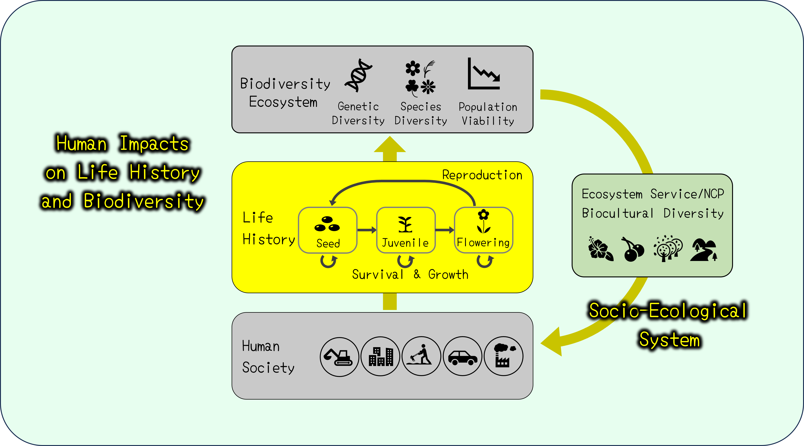

Organisms experience various events during their life, starting from birth, going through growth and reproduction, and ending up with death. "Life history" refers to such a chain of successive life events over the whole lifespan. Plant life history greatly differs among species. For example, while annual plants spend one year to complete their life, perennials take much longer years. Besides, life history differs also within species depending on environmental conditions, such that individuals are more likely to die at juvenile stages or produce less seeds at flowering stages under human disturbance.
生活史を明らかにするには、個体を経時的にモニタリングして、いつ・どの程度繁殖・死亡するのかを観測する「生活史調査」が必要です。 生活史調査は、私たち人間社会にあてはめて考えると、個人・世帯単位でのモニタリング調査である「国勢調査」に相当するアプローチといえます。 国勢調査が人口や年齢構成の将来予測に用いられているように、植物版国勢調査たる生活史調査は、個体群・群集レベルの現象を理解・予測するために必要な情報を提供してくれます。 そこで当研究室は、農地・森林・草地・都市緑地などにおける野生植物の生活史調査を通じて、 同種・他種個体の存在や土地開発・化学物質汚染などの人為かく乱のもとで植物がどのような生活史を持っているのかを明らかにするとともに、 個体数や遺伝的多様性・種多様性の将来予測に挑んでいます。
人間は生物多様性や生態系を脅かす一方で、植栽や鑑賞物、特産品など様々なかたちで植物を利用し、経済的・文化的恩恵を享受しています。 当研究室は、こうした植物の生態系サービス・NCP (Nature's Contibution to People)に着目して、人間社会にとっての生物多様性の価値や社会-生態系の関連の解明にも挑んでいます。 人間社会と生物多様性の相互作用を明らかにすることで、生態系と調和した農林業・緑地空間のあり方を探求しています。